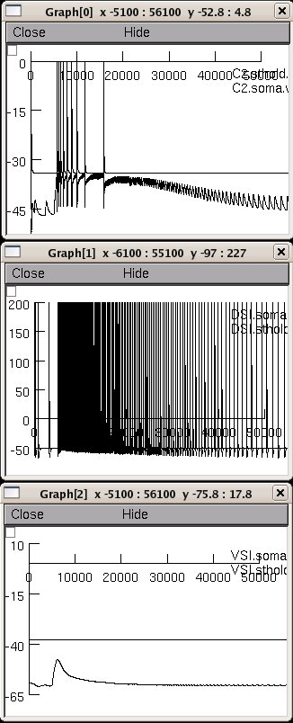

This is the readme for the model files associated with the paper: Calin-Jageman RJ, Tunstall MJ, Mensh BD, Katz PS, Frost WN (2007) Parameter space analysis suggests multi-site plasticity contributes to motor pattern initiation in Tritonia. J Neurophysiol These files were contributed by Robert Calin-Jageman. When run in its default mode it produces a graph similar to figure 7 B4. Usage instructions: To run the model simple auto-launch from ModelDB and press "Init & Run" or under linux/unix: ----------------- nrnivmodl then type nrngui mosinit.hoc in the expanded archive directory. under mswin: ------------ compile the mod files with mknrndll, then double click on the mosinit.hoc file under MAC OS X: --------------- drag and drop the nfrost folder onto the mknrndll icon, then drag and drop the mosinit.hoc file onto the nrngui icon. Then for all platforms: once the simulation is loaded, then press "Init & Run" and graphs will be created similar to: 